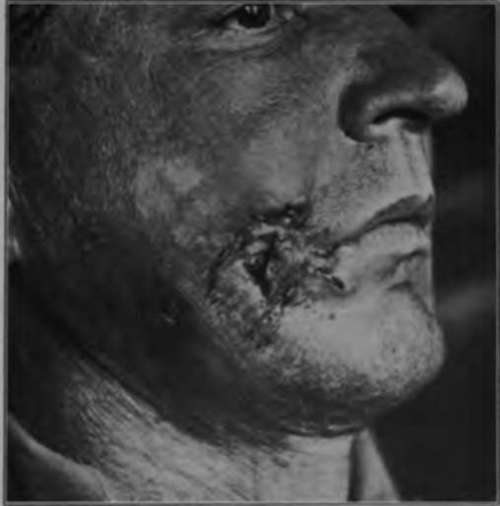

Chapter VI. Spino-Celled Carcinomata
Description
This section is from the book "Skin Cancer", by Henry H. Hazen, A.B., M.D.. Also available from Amazon: Skin Cancer.
Chapter VI. Spino-Celled Carcinomata
Occurrence
In many ways this group of cancers forms the most important one from a clinical standpoint, for, when it is remembered that the lips, tongue, and penis are chiefly affected by this type, and that in addition a large proportion of the growths upon the cutaneous surfaces are prickle celled, it will readily be seen that the more important of the surgical epithelial cancers belong to this category. In a surgical service about two of these growths are seen to one basal-celled neoplasm, but in a dermatological service the reverse is the case. In the last forty cases of cancer of the skin seen by the author, nine were of this kind. According to the statistics of Bloodgood,* these tumors are most frequently encountered upon the lip; secondly, upon the skin; thirdly, upon the tongue; and, fourthly, upon the penis. In his review* of 60 cases from Bloodgood's service the writer found that the neoplasm upon the skin arose in the following localities: finger, 4 cases; hand, 11 cases; wrist, 2 cases; forearm, 2 cases; elbow, 2 cases; upper arm, 3 cases; foot, 2 cases; ankle, 3 cases; lower leg, 6 cases; knee, 2 cases; thigh, 3 cases; scalp, 3 cases; face, 8 cases; neck, 3 cases; trunk, 5 cases; and scrotum, 1 case.
Etiology
For all practical purposes, the study of the precancerous lesions are the most important. In this same series of 60 cases the preexisting maladies were as follows: scar of burn, 11 cases; scar of trauma, 5 cases; sinus, 1 case; senile keratosis, 4 cases; "wart," 14 cases; "pimple/9 5 cases; blastomycosis, 1 case; x-ray dermatosis, 2 cases; lupus vulgaris, 1 case; ulcer, 3 cases; scratch, 1 case; arsenic keratosis, 2 cases; uncertain, 10 cases. Upon the lips almost any variety of lesions may serve as the starting point, while upon the tongue lesions of leukoplakia or of syphilis are especially apt to become malignant.
Varieties
Bloodgood formerly divided the spinocellular tumors into epithelioma spinocellulare and carcinoma spinocellulare, using the latter term when the typical arrangement of the benign prototype was lost. From a clinical standpoint there are but two typesthe ordinary one of cancer and the other of the malignant wart that neither infiltrates nor metastasizes.
*Bloodgood: Progressive Medicine, Dec, 1904. aHazen: Jour. Cutan. Dis., 1915, xxxiii, 611.
Clinical Course
Clinically, the true cancers first appear as nodules that usually speedily ulcerate. They may then be either fungous or pure ulcers, or a combination of the two. The surface is usually rough and irregular, and is often papillary. The color is that of a dirty granulation tissue, with some whitish splotches. Around the edges there may be some cancer plugs, looking somewhat like comedones, from which masses of cancer cells can be squeezed. The tissue is friable and bleeds easily. The edge is usually very hard, and there is often deep induration. Growth is usually comparatively rapid, and it is not unusual to see extensive involvement by the end of the first year. A tumor of nearly 15 cm. diameter may be developed by the end of two months.
Fig. 31.-Deep prickle-celled cancer of cheek in a young man. (Sutton's collection).
The most important thing to remember about this group of cancers is that they frequently metastasize. The author made a special study of this point in the paper already referred to, and has found that out of the 60 cases reported, 38 were followed for three years or more, and that out of these 38 cases, 23 had definite metastases. Ir certain of these cases the metastatic growths apparently formed at a very early date, 4 when the primary growth was of not more than one month's duration. Spinocelled tumors of the body and head seem to be rather more apt to metastasize than those upon the limbs, and those originating from x-ray or arsenic keratoses sec especially dangerous in this respect.
The spinocelled malignant warts first appear as wart-like growths, which develop rather slowly. There is often a tendency toward pe-dunculation, and there is no cancerous infiltrate at the base. As a result, these growths do not form metastases.
Fig. 32.-Rapidly growing cancer developing from within the ear. (Heidingsfeld's collection).
Pathology
If one of these tumors be excised and then cut into halves, a number of interesting things may be seen by the naked eye-things that go a long way toward making an accurate diagnosis. There is usually rather wide and deep invasion of the corium; perhaps of the underlying muscle. Bloodgood states: "The epithelial alveoli are distinctly white in color, finely granular, and arranged in a more or less uniform papillary shape. . . . The fine, branching white lines are composed of masses of spinal-celled epithelium on a connective tissue basis." These lines are very much coarser than the lines in basal-celled growths, for in this latter conease; only rarely are there any great number of polymorphonuclear leucocytes, and then usually only when secondary infection has taken place.
On histological examination a number of different types can readily be made out (Figs. 34, 35), although there is not as wide variation as in the histopathology of the basal-celled neoplasms. At the start the growth is usually solid; there is a dipping down of the rete, the new growth consisting almost entirely of prickle cells, but the basal membrane of cuboidal cells still remaining intact. Many of these prickle cells have lost their nuclei, in others atypical kary-okinesis is going on; some of the cells have undergone various types of degeneration, already sufficiently discussed in chapter I, and there are considerable spaces between the cells. In addition to this, the prickles are disappearing. Other descending alveoli appear, not at more or less distant places, as so frequently occurs in the basal-celled growths, but as branches from the original downgrowth. The next appearance is where there are a number of solid alveoli, side by side, serial sections showing them to be connected and not separate and distinct. These solid alveoli may be large or they may be very small, so small as to be only four or five cells' diameter in thickness. In these early stages there is no tendency for whorl formation or the formation of epithelial pearls, but these changes may come very shortly, and are usually apparent about the time that the growth begins to divide into numerous small alveoli. These small alveoli are, of course, the processes or buds that have been nipped off from the original parent growths. When one studies a comparatively late squamous-celled cancer of the skin, he will see that it usually conforms to one of four different arrangements: First, where a more or less papillary structure is maintained, all of the alveoli being about equal in size, and where the cuboidal basal cells are still found surrounding the prickle cells. In the center of these alveoli the cells are often found flattened out in a concentric shape, forming the well-known whorls, and distinct pearl formation may take place. Second, there may be very numerous small alveoli, each composed of but a few cells, and separated from its fellows by connective tissue. In this form there are usually no basal cells discernible, and there is a great tendency for whorl or the more advanced pearl formation. Third, the neoplasm has a distinctly tubular formation, the cells being arranged in long lines that have many branches, which are rarely bordered by basal cells. And, lastly, the cell arrangement may be more or less that of a scirrhous carcinoma -that is, small islands of cells are found, surrounded by connective tissue. This type is analogous to the Carcinoma basocellulare stellatum of Bloodgood, except that here we have prickle instead of basal cells.
Fig. 33.-Prickle-celled cancer originating In the mastoid following mastoid operation. (Heldingsfeld's collection).
Fig. 34.-High-power photomicrograph of prickle-celled cancer. (Author's collection).
Fig. 36.-Epithelial pearls In a squamous-celled cancer. (Author's collection).
As will be readily seen, the whole histological picture is essentially different from that found in the basal-celled growths; the cancerous alveoli are larger, invasion is deeper, there are epithelial whorls or pearls, the cells are much larger, and stain more intensely with eosin or orcein.
Continue to:
Tags
bookdome.com, books, online, free, old, antique, new, read, browse, download